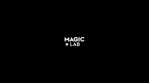
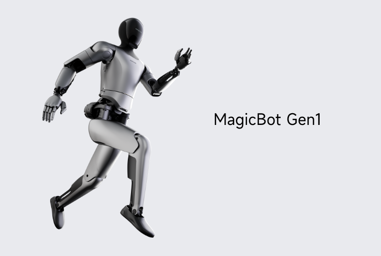
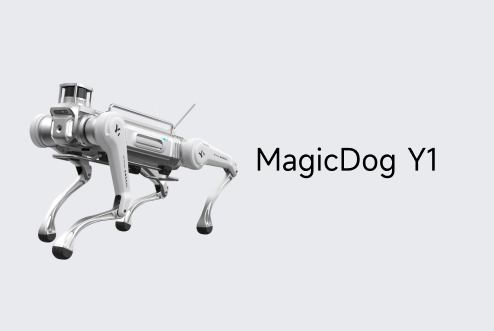
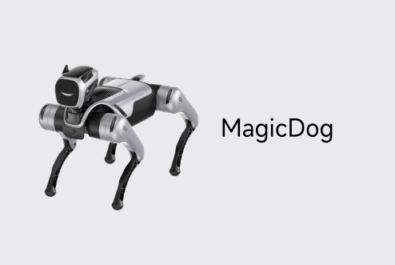

Private · China
MagicLab Company Profile
Embodied AI, humanoid robotics, and quadruped robotics
MagicLab facts
- Category
- Embodied AI, humanoid robotics, and quadruped robotics
- Primary focus
- Humanoids
- Segments
- Humanoids · Embodied AI · Quadruped · China Robotics · Commercial Access
- Country
- China →
- Type
- Private
- Ticker
- Not public / not listed
- Website
- Official website →
- Focus
- General-purpose humanoid robots, embodied intelligence, quadruped robots, and robot components.
Robologai signal
MagicLab is part of the humanoid robotics watchlist because its products, research, or market activity point toward general-purpose embodied labor. Tracked products include MagicBot Gen1, MagicBot Z1, MagicDog-W.
Strategic Positioning
Why MagicLab matters to the physical AI economy.
HumanoidsEmbodied AIQuadrupedChina RoboticsCommercial AccessIndustrial
6 intelligence tags attached to this profile.
Company Snapshot
Core signals Robologai tracks for MagicLab.
Product Lineup
Tracked robots and products associated with MagicLab.

Humanoid
MagicBot Gen1
Flexible manufacturing and multi-robot collaboration
No broad public price · reference signal
Robot profile →

Humanoid
MagicBot Z1
Scientific research, education, exhibitions, cultural tourism, commercial performance, and embodied AI development
No official public price
Robot profile →

Wheeled Quadruped
MagicDog-W
All-terrain wheeled-legged mobility, inspection, research, education, and expansion payload development
No official public price
Robot profile →

Quadruped
MagicDog Y1
Industrial inspection, field patrol, heavy payload mobility, emergency response, and all-terrain autonomous robotics
No official public price
Robot profile →

Quadruped
MagicDog
Emotional interaction, education, programming, companionship, inspection-style mobility, and quadruped development
No official public price
Robot profile →
Data Quality
Robot coverage, official sources, market type, and review status.
Source Notes
MagicLab source trail.
Market Signal
How MagicLab fits into the robotics economy.
Related Companies